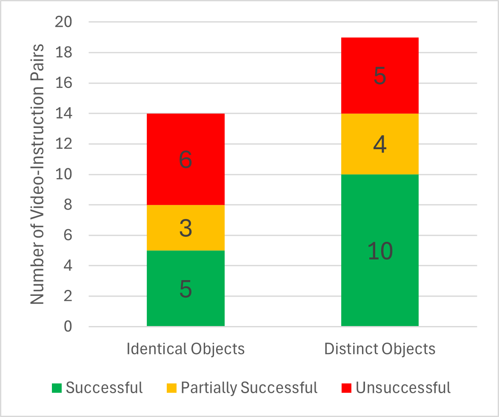

Introduction
Spatial and temporal reasoning are central to robots interpreting everyday instructions from a human partner. Consider the scenario where a human places an object on the table and the robot observing the scene is asked to "pick up the object that was placed on the table”. Grounding such instructions requires the robot to (i) determine which inter-object interactions need to be examined in the past , (ii) grounding the specific interaction in past visual observations and (iii) performing the intended actions such as picking, placing, pushing etc. in the future. Traditional approaches for language grounding to robot actions map instructions to objects in the current world model of the robot with limited or no ability to reason about past interactions. Contemporary approaches combine reasoning over past observations or an explicit memory to inform future plans executed by the robot. However, such approaches are supervised using a fixed set of objects and interactions and rely on hand-crafted features. Recent emergence of foundation models (large visual, language or cross-modal models) pre-trained on internet scale data offer reasoning capabilities in an emergent manner. Hence, our work considers how such models can be leveraged for zero-shot reasoning for grounding instructions that require reasoning over temporally extended interactions. We develop and evaluate a module architecture that performs (i)temporal parsing over the input sentence using in-context prompts to an LLM (ii) a module that determines the validity of textual descriptions of interactions in an image (e.g., the object that was put down) (iii) a module that grounds the objects of manipulation action into the image and then point cloud space for the motion planner to execute the task. We discuss the modeling choices, accuracy and errors recorded while deploying this approach using a data set collected from an in-hand camera on a Franka Emika Panda robot operating in an indoor setting.
Curated Dataset
To evaluate the pipeline, we formulated a dataset of 30+ video-instruction pairs (mean length 6 seconds). The dataset consists of a variety of scenarios such as single action - single interaction, single action - multiple interactions, and multiple actions - multiple interactions, with similar and distinct objects in the scene. Some examples of the curated dataset are shown below:

Single Action - Single Interaction - Similar Objects

Single Action - Multiple Interactions - Distinct Objects

One Action - Multiple Interactions - Similar Objects

Single Action - Single Interaction - Distinct Objects

Multiple Action - Multiple Interaction - Distinct Objects
Video Demonstration
The following is a video demonstration of our pipeline for the instruction "pick the object that I just placed." The robot in scene is a Franka Emika Arm Manipulator. There is a table in front of the robot, on which various objects such as a pair of glasses, a cup, and a small bottle are already kept and the robot is observing this scene with its camera. Then a person comes and places a new object (a banana) on the table. This is recorded as a stream of frames in robot's camera. Then an instruction "pick the object that I just placed" is given to the robot. This instruction and the recorded past observations are sent as input in our model. First, the instruction is broken down into a future action for the robot (in this case "pick up the object") and a declarative part to be sent to LVLM for processing (for e.g "Identify the object that was just placed"). After this parsing action (carried out by GPT-4), an initial scene description is given from the first frame of the recorded set of frames (i.e scene before action)(carried out by GPT-4v). This scene description, alongwith other inputs are sent to LVLM for object interaction recognition. For our case, the LVLM, Video-LLaVA returns "The object that was placed is a banana. It is yellow in colour and is kept in front of the person placing it." Now, as a next step, the object of interest i.e a banana, is extracted from this output by a parser (via GPT4). Once it is identified that the object of interest is a banana, the next step is to ground it. This is done by passing robot's present visuals and the object to be grounded, "banana" , to a semantic phase grounding model (for our case, CogVLM). This gives us a bounding box around the objec of interest and its coordinates. Once grounded, the control component plans motion for the robot and executes the intruction by picking up the banana as can be shown in the video.
Experimental Insights
We compared the state of the art LVLM and LLM models to realize various aspects of the proposed pipeline. We use GPT4 for both the parsing tasks, GPT-4V for initial scene description, Video-LLaVA for object interaction recognition and CogVLM for semantic object grounding. The experimentation of the entire end-to-end pipeline was carried out on a Franka Emika robot manipulator. The robot observes a person placing an object and later successfully executes the instruction, "robot, pick up the object that I just placed". The figure below show the accuracy of instruction following for the scenarios partitioned as those containing identical vs. distinct objects on the scene. The overall success rate was obtained as 45.3%. We observe that LVLMs gave incorrect or ambiguous outputs when all the objects on the scene were identical while higher performance for scenarios with distinct objects. Results indicate the lack of robustness in contemporary LVLMs in identifying complex spatial properties.
Accuracy of Pipeline (divided on dataset)
Example - Failure Case 1
Scenario in which all objects are completely identical and the spatial properties get complex (objects are too close to each-other)

Example - Failure Case 2
Scenario in which two identical objects are placed among other distinct objects.

Conclusion and Future Work
It was found that GPT-4V returns an accurate and detailed description of the initial scene. Combining this with Video-LLaVA's temporal understanding over videos, especially short duration ones, and CogVLM's state-of-the-art grounding abilities, we were able to identify objects of interest with ease. It was observed that providing the initial scene description facilitates the LVLM in accurately identifying objects that have been manipulated, especially in ambiguous scenarios where there are similar objects in a scene, thereby reducing hallucinating and erroneous object identification. Further, it was discovered that our choice of semantic object grounding model, CogVLM, performs well even when partially erroneous LVLM outputs. Future work will explore improved prompting strategies such as chain-of-thought as well as feedback from a downstream model to refine predictions of an upstream model.